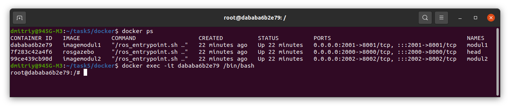

Задание по docker
Связь между хостом с Head через сеть, порт 80 на хосте с портом 8000 на Head, Modul1 подключается к Head через usb, Modul2 пускай через свой порт 8002 подсоединён к порту 8000 на Head.
Код docker-compose2.yml:
version: '4'
services:
head:
container_name: head
image: rosgazebo
networks:
- host
- net1
- net2
ports:
- 80:8000 #80 порт на хосте связан с 8000 на head
stdin_open: true # docker run -i
tty: true # docker run -t
volumes:
- $HOME/task5:/task5
command: tmux new window
modul1:
container_name: modul1
image: imagemodul1
#build:
#context: ../
#dockerfile: docker/Dockerfile1 # Path to the Dockerfile relative to the context
volumes:
- $HOME/task5:/task5
stdin_open: true # docker run -i
tty: true # docker run -t
networks:
- net1
ports:
- 80:8001 #80 порт на хосте связан с 8001 на modul1
command: tmux new window
modul2:
container_name: modul2
image: imagemodul2
volumes:
- $HOME/task5:/task5
stdin_open: true # docker run -i
tty: true # docker run -t
networks:
- net2
ports:
- 80:8002 #80 порт на хосте связан с 8002 на modul2
command: tmux new window
networks:
host:
net1:
net2:
cd task5/docker
docker build -t imagemodul1 -f Dockerfile1 . создал образ imagemodul1 для контейнера modul1
docker build -t imagemodul1 -f Dockerfile1 . - создал образ imagemodul2 для контейнера modul2
образ rosgazebo был создан в предыдущем задании
docker-compose -f docker-compose2.yml up
Error response from daemon: driver failed programming external connectivity on endpoint head
(fcc81b859f6ada4a73db17f5791730d173c53a899874eafdc5ccae070acd9da4): Bind for 0.0.0.0:80 failed: port is already allocated
Есть предположение, что какой-то контейнер уже использует порт 80.
docker rm $(docker ps -a -q) - удалил все контейнеры.
Повторил:
docker-compose -f docker-compose2.yml up

Не помогло. Теперь идея, что 80 порт должен связан с одним контейнером. Оставим в контейнере head, но тогда как в других контейнерах? Поменял, ошибка повторилась.
Видимо порт 80 занят на хосте, поменял его на 2000 (head), 2001 (modul1), 2002 (modul2).
Теперь команда: docker-compose -f docker-compose2.yml up выполнилась без ошибок, но результата, я не увидел.

Тогда в docker-compose2.yml значение command изменил на /bin/bash
docker-compose -f docker-compose2.yml up
Результат:

В фоне есть мои контейнеры и порты.
docker exec -it 7f283c42a4f6 /bin/bash
Запустил командную строку контейнера head.
Запустил командную строку контейнера modul1.

Запустил командную строку контейнера modul2 через его имя.
Проблема с volumes
Очередная проблема: чтобы посмотреть какие каталоги прикреплены контейнерам, выполнил команду ls. В head нет прикреплённого каталога из хоста. В контейнерах modul* наоборот прикреплен корневой каталог из хоста и заодно там находится task5. Дальше home опуститься нельзя.
В docker-compose2.yml, во всех контейнерах:
volumes:
- $HOME/task5:/task5

Предлагаемое решение: во всех dockerfile поменять значение WORKDIR на /task5. На dockerfile (rosgazebo) так сразу было установлено, но возможно не обновил образ rosgazebo. Пересоберём все образы.
Удалил контейнеры, собрал образы. Теперь:
docker-compose -f docker-compose2.yml up
Создал 3 attaching контейнера. Далее команда: tmux. Дважды tmux split-window -v - разделил окно на 3 панельки.
В каждой панельке ввёл команду:
docker exec -it name_conteiner /bin/bash
В результате в каждой панели командная строка своевого контейнера:
Теперь задача передать данные от хоста с порта 200* в порт контейнера 800* и наоборот